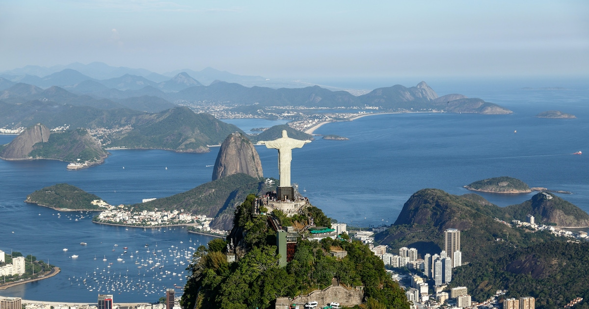

Home
Pão de Açúcar
Floresta da Tijuca
Praias
Corcovado
 O Corcovado é um dos morros da cidade do Rio de Janeiro, célebre no Brasil e no mundo pela sua estátua do Cristo Redentor de 38 metros de altura.
O Cristo Redentor é um dos principais símbolos do país e oferece uma privilegiada vista panorâmica da cidade do Rio de Janeiro. Em 2003 foram concluídas as obras de instalação de elevadores e escadas rolantes no local. Antes, era preciso vencer 220 degraus para desfrutar da paisagem.
O Corcovado é um dos morros da cidade do Rio de Janeiro, célebre no Brasil e no mundo pela sua estátua do Cristo Redentor de 38 metros de altura.
O Cristo Redentor é um dos principais símbolos do país e oferece uma privilegiada vista panorâmica da cidade do Rio de Janeiro. Em 2003 foram concluídas as obras de instalação de elevadores e escadas rolantes no local. Antes, era preciso vencer 220 degraus para desfrutar da paisagem.

No dia 7 de julho de 2007, a estátua do Cristo Redentor foi eleita em uma votação uma das novas sete maravilhas do mundo. A votação teve o patrocínio da ONU, porém, sem ter um caráter oficial.
O morro do Corcovado possui 710 metros de altura e encontra-se no Parque Nacional da Tijuca. O Corcovado situa-se ao oeste do centro da cidade, mas mesmo assim pode ser observado desde longas distâncias.